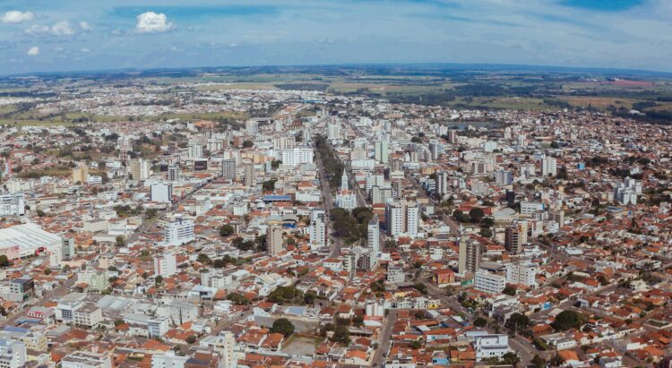
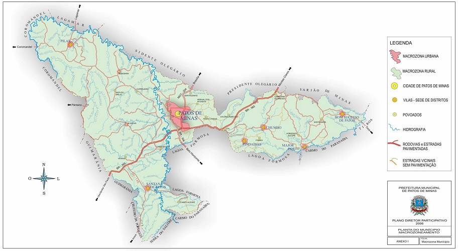

Patos de Minas
O processo de colonização da região ocupada hoje pelo município de Patos de Minas e distritos vizinhos teve início, provavelmente, na metade do século XVIII, período que antecede à descoberta do ouro nas regiões das minas, com o movimento das entradas e bandeiras rumo às terras de Paracatu.A cidade de Patos de Minas surgiu na segunda década do século XIX em torno da Lagoa dos Patos, de onde vem o nome, por causa da grande quantidade de patos silvestres A década de 50 foi de grande avanço regional. Houve grande surto migratório e a instalação de grandes firmas comerciais nos mais diversos segmentos. Nessa época, construiu-se o primeiro terminal rodoviário e iniciou-se a comemoração da Festa Nacional do Milho. Grandes avanços vieram após a ditadura militar, onde a cidade crenceu com a migração de várias pessoas de vários locais do pais para formar a vasta população que temos hoje.
Curiosidades
Municipio brasileiro do estado de Minas Gerais Situada no Alto Paranaíba e na Mesorregião do Triângulo Mineiro e Alto Paranaíba. Segundo estimativa do IBGE de 2021, sua população é de 159.235 habitantes (Censo 2022). Considerada polo econômico regional, é a maior cidade do Alto Paranaíba, região composta por dez municipios. A cidade ganhou projeção nacional através da Festa Nacional do Milho realizada no mês de maio, movimentando vários setores da economia.